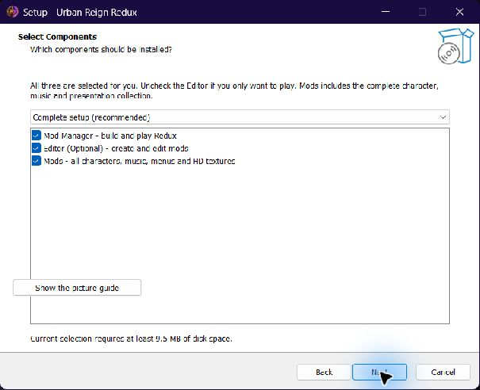
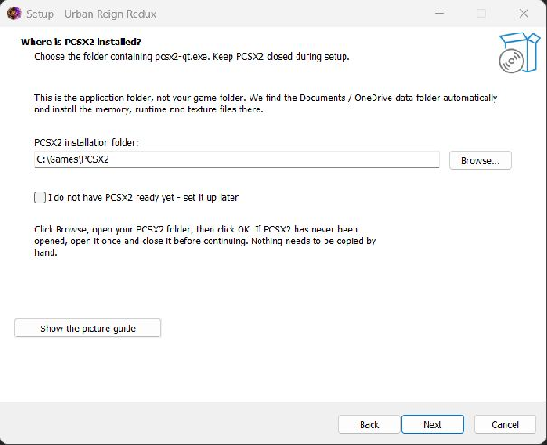
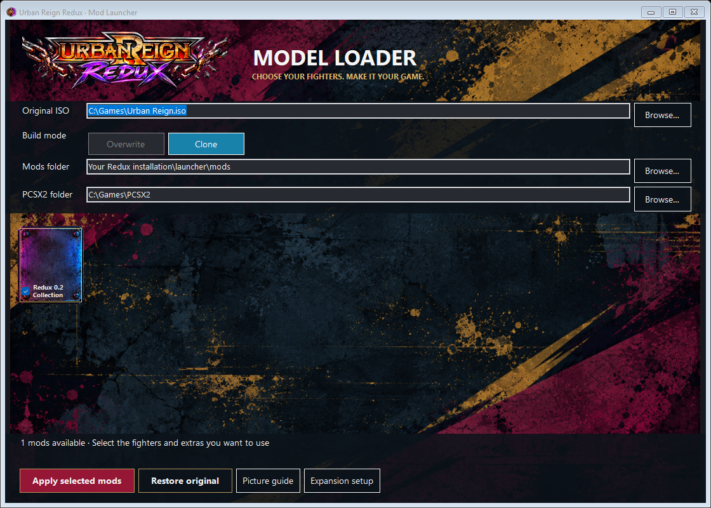
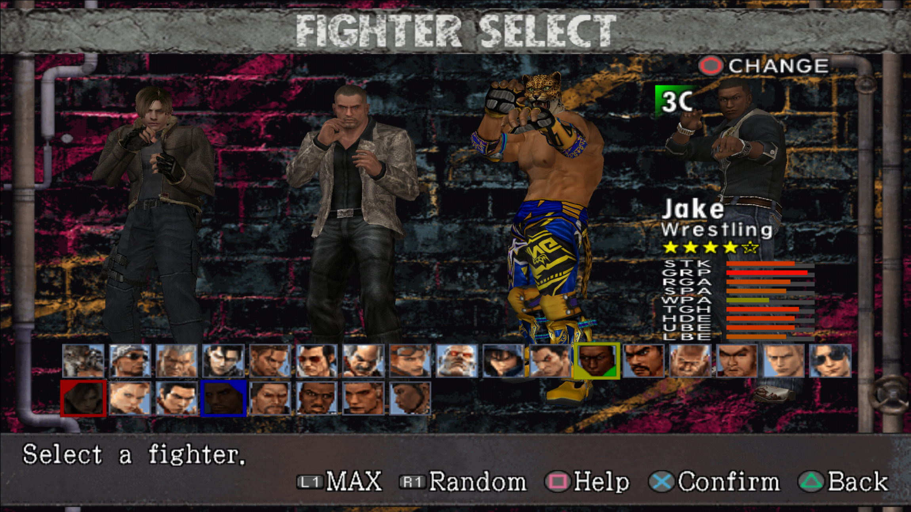

Follow the yellow boxes. Keep this guide open while you set up.
Download Auto-Installer.exe · Windows 64-bit · A game ISO and PCSX2 are not included.
Leave Mod Manager, Editor (Optional) and Mods checked. If you only want to play, you can uncheck Editor. Click Next.

Keep all three checked, then click Next. The Editor is optional. Disk space varies with the selected components.
The Mods box includes all release characters, music, menus and HD textures. You do not need to move files or download another pack.
Click Browse and select the folder containing pcsx2-qt.exe (or another pcsx2*.exe). This is the emulator program folder, not the folder containing your games.

Click Browse and choose YOUR PCSX2 program folder. C:\Games\PCSX2 is only an example.
Setup finds the PCSX2 data folder in Documents or OneDrive automatically. Portable installations and custom texture/cheat folders are also supported. It installs the memory patch, runtime files and HD textures for you.
If setup cannot find the data folder: open PCSX2 once, close it, then try Next again. If you do not have PCSX2 ready, check “set it up later”. Do not play until that step is complete.
Open Redux Mod Manager from your desktop or Start menu. Browse to your own supported original Urban Reign .iso. Keep Clone selected.

Click Browse beside Original ISO. Keep Clone selected to leave your original untouched.
Your PCSX2 and Mods folders are filled in by the installer. If you deferred PCSX2 setup, use the PCSX2 folder row now.
Select the folder containing pcsx2-qt.exe. Memory and runtime setup runs automatically.
Leave Redux 0.2 Collection checked by itself, then click Apply selected mods. The one Collection card contains the complete release. Example paths are shown below; your folders will differ.
Click Apply selected mods and wait until the build finishes successfully.
The new ISO is saved beside your original, with -modded in its name. Open that new ISO in PCSX2 and start from a fresh boot — do not load an old save state.

During installation, Add desktop shortcuts is checked. Start menu shortcuts are included too. Open Mod Manager when I sign in to Windows is optional and starts unchecked.
On Select Additional Tasks: leave Add desktop shortcuts checked. Only check Open Mod Manager when I sign in to Windows if you want it to open at every login.
To pin to the taskbar:
Windows handles taskbar pinning; the installer does not force a pin or start an app at login unless you select it.
Use Mod Manager. The Editor is for changing or making mods, and is not needed to play.
Editor users: choose Settings → Build Redux 0.2 collection for the complete release. The normal authoring build is for your selected replacement mods.
Need to set up PCSX2 again? Open Mod Manager, choose the PCSX2 folder again, and wait for its setup confirmation.